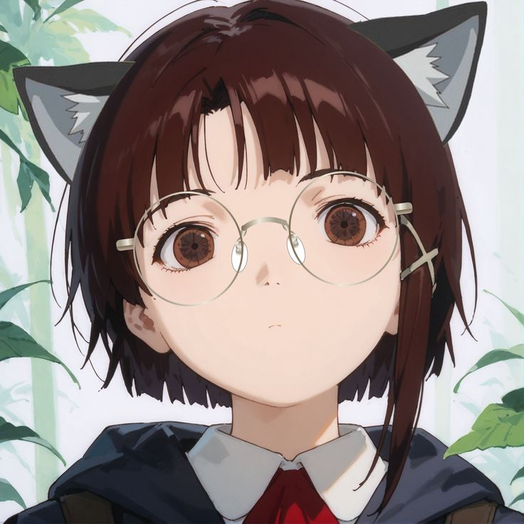

Hola, mi nombre es
Kineyo.
Construyo agentes de Inteligencia Artificial.
Soy un desarrollador de software de 17 años especializado en la creación de Agentes de Inteligencia Artificial, usando modelos de ollama y arquitectura llama.cpp. Actualmente, estoy enfocado en construir Agentes ligeros y centrados en la eficiencia y experiencia del usuario.
01. Sobre Mí
Hola, soy Kineyo, un apasionado por la programación y la Inteligencia Artificial. Mi interés por la creación de Agentes de Inteligencia Artificial nació cuando descubrí cómo automatizar tareas usando modelos de Ollama.
Tengo 17 años y mi enfoque principal es la creación de agentes de Inteligencia Artificial para automatizar diversas tareas de forma más sencilla.
Estos son algunos de los lenguajes con los que he estado trabajando recientemente y con los que estoy familiarizado:
- ▹ Python
- ▹ PyInstaller
- ▹ Ollama
- ▹ C++
- ▹ HTML, CSS & JS
- ▹ Kotlin

02. Algunos de mis proyectos

Proyecto Destacado
Proyecto_Kofu

Bifurcación de Kofu
Proyecto_Hino
IA Portátil
Proyecto_Nara
Juego Independiente
55shG4M

Agente de Pentesting
Proyecto_Kiru
Contacto
Ponte en contacto
Actualmente estoy buscando nuevas oportunidades y mi bandeja de entrada siempre está abierta. Ya sea que tengas una propuesta de proyecto o una pregunta, haré todo lo posible para responderte!
Telegram